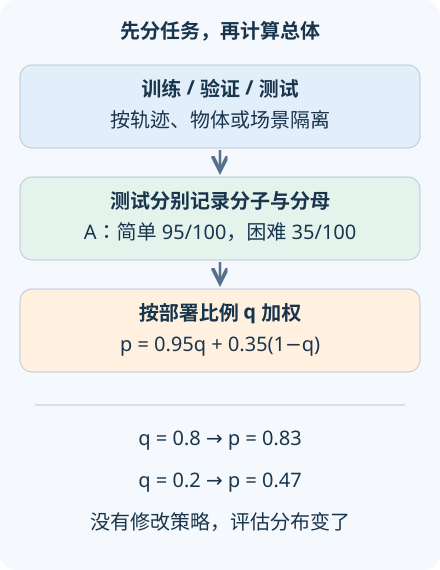

本讲目录
AI 研究 08 · 具身评估：成功率究竟属于哪一种任务
问题：一段成功视频、一个平均分和一次真实部署，分别能证明什么？先修：视觉语言动作模型、条件概率与抽样。资料核查截至 2026-09-08；本讲用固定合成任务库演示评估计算，机器人能力结论必须来自真实对应数据。
1. 先定义任务结束时什么叫成功
“拿起杯子”可以有多种实现，也有多种失败。杯子离桌一瞬间随后掉落，是否算成功？严谨协议要先写出成功谓词，例如在规定时限内，杯子处于指定区域、保持所需姿态并稳定两秒；还需规定碰撞、掉落、超时和人工接管如何计入。不同任务的阈值应来自任务要求，而非看完结果后选择。
记第 \(i\) 次完整任务的结果为 \(S_i\in\{0,1\}\)，成功率估计为 \(\hat p=n^{-1}\sum_iS_i\)。一次任务而非一帧图像是这里的统计单位。连续的一千帧并不等于一千次独立抓取，同一次试验中的停顿与重试也应按预先规定处理。
此外，报告终点成功和过程代价有不同作用。更快失败不应该得到“效率更高”的奖励；成功吞吐、时间、碰撞与人工干预应有明确分母。可以报告成功任务耗时，但必须同时报告失败比例，避免只对幸存样本计时造成误导。

2. 同样两个策略，为何会交换排名
设任务分成简单 \(E\) 和困难 \(D\)，部署中简单任务的比例为 \(q\)。全概率公式给出
策略 A 的条件成功率为 0.95 和 0.35，策略 B 为 0.8 和 0.5。简单任务占 80% 时，A 为 \(0.8\times0.95+0.2\times0.35=0.83\)，B 为 0.74；占 20% 时，A 为 0.47，B 为 0.56。算法没有改变，评估问题变了。
两者差为 \(0.3q-0.15\)，所以在 \(q=0.5\) 时恰好打平。这个临界点说明“谁更好”需要部署分布，而非再寻找一个脱离任务的总分。专业报告应先展示各任务族的成功次数和试验次数，再同时给出平衡平均与预先规定的部署加权平均。
实验固定简单、困难各 100 个编号，以均匀中点 \((i+0.5)/100\) 小于指定比例来生成成功标签。这是可重复的合成库，不是真实机器人的随机抽样。默认 A 的计数为 95/100、35/100，平衡分数为 0.65；滑块改变目标比例，不会重新生成训练结果。
3. 拆分必须隔开会泄漏的信息
如果同一次操作的前半段进训练集，后半段进测试集，即便文件名不同，场景、轨迹与物体状态仍高度关联。对“新轨迹泛化”，至少应按完整轨迹拆分；对“新物体泛化”，还应让对象身份隔离；对“新场景泛化”，则需隔离房间布局或场景实例。这些是不同测试，不应互相替代。
训练集拟合参数，验证集选择超参数、任务阈值与停止时机，测试集只承担最终评估。不断根据测试失败修改策略，再继续把同一组测试称为未见数据，会使结论越来越乐观。最少要记录任务版本、初始化种子、允许示范数、机器人平台和人工介入规则。
本实验还提供一个明确写死的污染模型：假设比例 \(\ell\) 的测试任务被复制并能靠记忆强制成功，其余保持真实成功率 \(p\)，则显示分数为
它说明为什么污染会抬高分数，不能据分数反推现实中泄漏了多少。真实复制任务也未必总成功，这里“强制成功”是教学假设，目的在于使分母与机制透明。
4. 长任务与不确定性怎样读
一个任务需要依次通过十个阶段，若每个阶段在前面都成功的条件下，成功概率都是 0.9，则由概率链式法则
此处用的是条件概率，不需要额外假定各阶段独立。把“单阶段约九成”说成“整项任务约九成”，会严重高估长程能力。阶段失败诊断还能区分目标识别、接触、运输和放置的瓶颈，帮助确定应该补什么数据。
若完整试验可视为独立同分布的伯努利抽样，\(\operatorname{Var}(\hat p)=p(1-p)/n\)。在样本较多且远离边界时，可以用 \(\sqrt{\hat p(1-\hat p)/n}\) 估计标准误；小样本或零失败应使用合适的二项区间，不能报告“零不确定性”。相同场景反复微调的试验可能相关，独立假设需要检查，更多相近重置不一定带来相同有效信息量。
5. 基准怎样支持、又限制前沿结论
LIBERO，首稿 2023-06-05组织多种机器人操作任务以研究迁移与持续学习，提示评估需要分解知识类型和任务顺序。SIMPLER，首稿 2024-05-09研究用模拟评估现实操作策略，并比较指定任务与平台上的模拟、真实结果。模拟中的相对表现能否外推，需要实测相关性，而非只凭画面相似。
π0.7 官方研究，2026-04-16展示近期 VLA 的可引导与组合任务方向。面对这样的研究，值得保留的不只是成功示例，还包括训练与测试的关系、指令复杂度、人工帮助、失败类别以及试验次数。公司研究可提供一手证据，其范围由报告中的实际协议决定，不能自动升级为跨所有平台的排序。
当前这条路线因此与前三讲闭合：世界模型决定预测误差，规划决定如何使用预测，动作接口与延迟决定怎样真实执行，任务协议决定最后的成功数字究竟在测什么。可以分层诊断，却不能把某一层的好指标当成整个系统已经成功。
先保持策略不变，把简单任务比例从 0.8 改为 0.2，预测排名是否翻转；再增加假设污染，比较显示分数与干净分数。最后查看十阶段链式成功值，解释它与各阶段平均值为什么不同。
6. 迁移练习
题一：希望声明能泛化到新厨房，只留出旧厨房中的新相机帧够不够？应怎样拆分？
展开答案
不够。应按厨房或场景实例隔离训练与测试，并记录物体身份、布局和任务分布是否也变化。可另设旧场景新轨迹、新场景旧物体等分层测试，帮助定位泛化来源；结果只支持对应的外推范围。
题二：二十次试验中全部成功，能否写“成功概率为 100%”？
展开答案
可以写观测计数 20/20，但总体成功概率仍有不确定性。独立同分布假设下，真实概率低于 1 也可能产生二十连胜，应给二项置信区间或明确假设的后验区间，同时报告初始化与人工干预协议。
速查摘要
| 项目 | 必须写清 |
|---|---|
| 成功率 | 成功谓词、试验次数、超时与人工接管 |
| 数据拆分 | 轨迹、物体、场景分别对应不同泛化问题 |
| 分布与长程 | 条件成功率再加权；阶段条件成功率用乘积 |